Open Design + Fab Lab
09 Gennaio 2014
1. From Design for the users to Design with the users
2. Open (Source)... everything
3. Open Design: what is it?
4. Open (Design): IP + Business
Traditional view of design
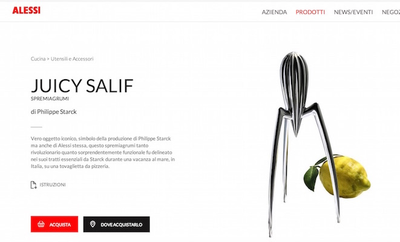Source: http://www.alessi.com/it/prodotti/dettaglio/psjs-juicy-salif-spremiagrumi
Limitations...
Any customer can have a car painted any colour that he wants so long as it is black.
Henry Ford
Approaches...
- Marketing (market pull)
- Technology (technology push)
- Mass-customization
- ...
- Human-centered Design
Human-centered Design
an approach to systems design and development that aims to make interactive systems more usable by focusing on the use of the system and applying human factors/ergonomics and usability knowledge and techniques
Source: ISO 9241-210
ISO 9241-210: Abstract
ISO 9241-210:2010 provides requirements and recommendations for human-centred design principles and activities throughout the life cycle of computer-based interactive systems. It is intended to be used by those managing design processes, and is concerned with ways in which both hardware and software components of interactive systems can enhance human–system interaction.
Source: ISO 9241-210
ISO 9241-210: Recommendations
- The adoption of multidisciplinary skills and perspectives
- Explicit understanding of users, tasks and environments
- User-centred evaluation driven/refined design
- Consideration of the whole user experience
- Involvement of users throughout design and development
Source: ISO 9241-210
Roots: Human-computer Interaction
Human–computer interaction (HCI) involves the study, planning, and design of the interaction between people (users) and computers. It is often regarded as the intersection of computer science, behavioral sciences, design and several other fields of study.
Source: http://en.wikipedia.org/wiki/Human%E2%80%93computer_interaction
Roots: Human-computer Interaction
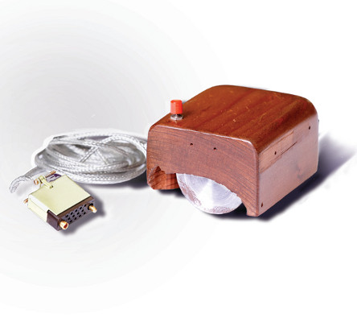... to Social Innovation
... to a Kit for NGO
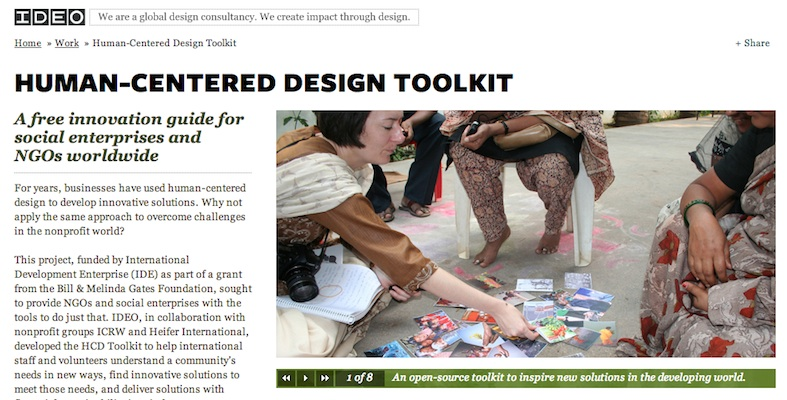Source: http://www.ideo.com/work/human-centered-design-toolkit/
... to an online platform
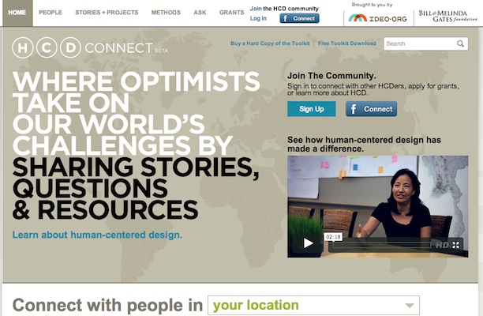Source: http://www.hcdconnect.org/
... to a no-profit initiative
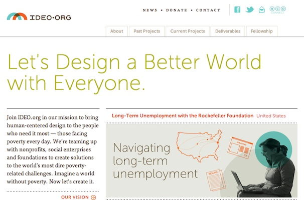Source: http://www.hcdconnect.org/
... to an online course
Source: http://vimeo.com/68659872
Roots: Participatory Design
Participatory design (known before as cooperative design) is an approach to design attempting to actively involve all stakeholders (e.g. employees, partners, customers, citizens, end users) in the design process in order to help ensure the product designed meets their needs and is usable.
User-centered Design
User-centered design (UCD) is an approach to design that grounds the process in information about the people who will use the product. UCD processes focus on users through the planning, design and development of a product.
Usability Professionals' Association
Source: http://www.usabilityprofessionals.org/usability_resources/about_usability/what_is_ucd.html
User-centered Design: Principles
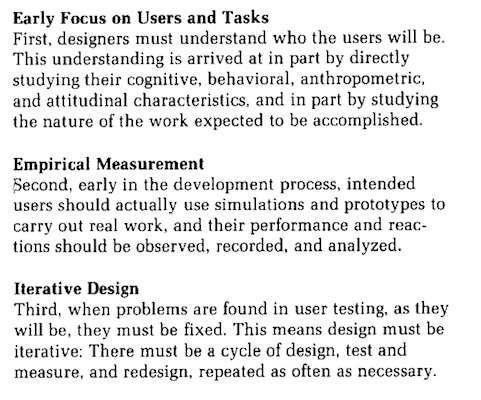Gould, J. D., & Lewis, C. (1985). Designing for usability: key principles and what designers think. Commun. ACM, 28(3), 300–311. doi:10.1145/3166.3170
User-centered Design: The design process from ISO-13407
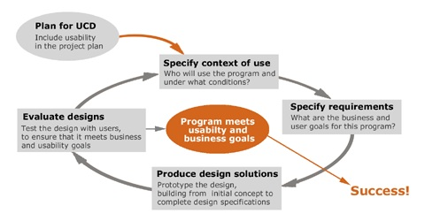Source: http://www.wqusability.com/articles/language-usability-tekom-proceedings.html
User-centered Design: models
design model vs. user model
as understood by designers vs. as understood by users
Source: Rizzo, F. (2009). Strategie di co-design : teorie, metodi e strumenti per progettare con gli utenti. Milano: F. Angeli.
User-centered Design: Usability
- easiness of learning
- efficiency of the user
- easiness of memorizing
- few errors
- user satisfaction
Source: Mack, R. L., & Nielsen, J. (1994). Usability inspection methods. Wiley & Sons.
A nice book about usability...
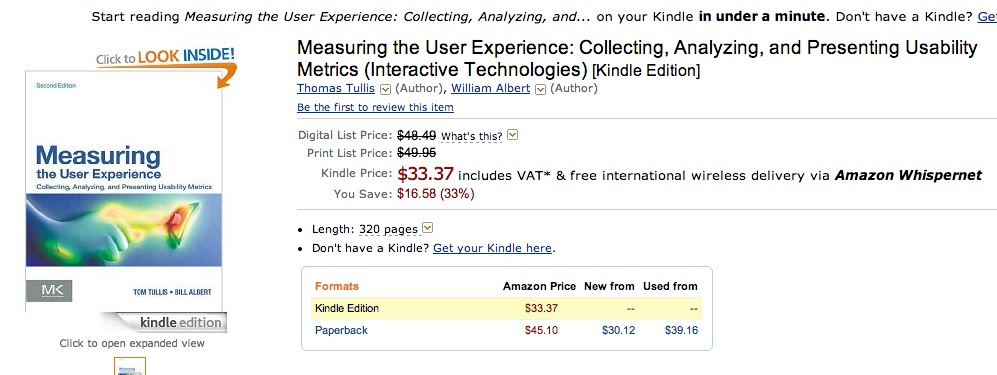Source: Tullis, T., & Albert, W. (2013). Measuring the User Experience: Collecting, Analyzing, and Presenting Usability Metrics (Interactive Technologies) (2 edition.). Morgan Kaufmann.
User-centered Design: Cognitive Psychology
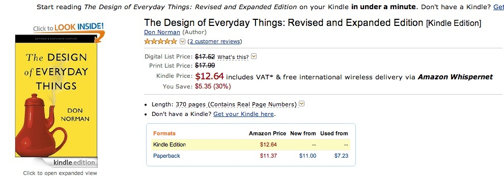Source: Norman, D. A. (2013). Design of everyday things. [S.l.]: Basic Books.
Cognitive Psychology: affordances
- Give visibility of all the functional parts
- Give a good mapping between command and result
- Give affordances and constraints
- Give feedback
- Give a good conceptual model
- Simplify tasks
Source: Norman, D. A. (2013). Design of everyday things. [S.l.]: Basic Books.
Cognitive Psychology: affordances
An affordance is a quality of an object, or an environment, which allows an individual to perform an action by suggesting the action to be taken.Source: Norman, D. A. (2013). Design of everyday things. [S.l.]: Basic Books.
Cognitive Psychology: constraints
- Physical
- Semantic
- Cultural
- Logic
Source: Norman, D. A. (2013). Design of everyday things. [S.l.]: Basic Books.
Tools: Personas
Tools: Scenario / Storyboard
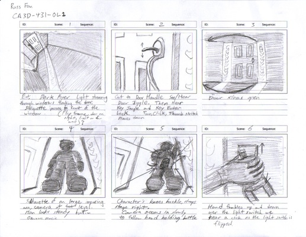... more tools: a toolkit
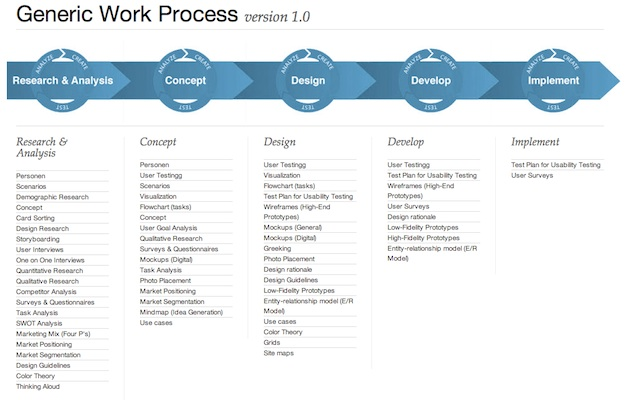User-centered design: an updated recap
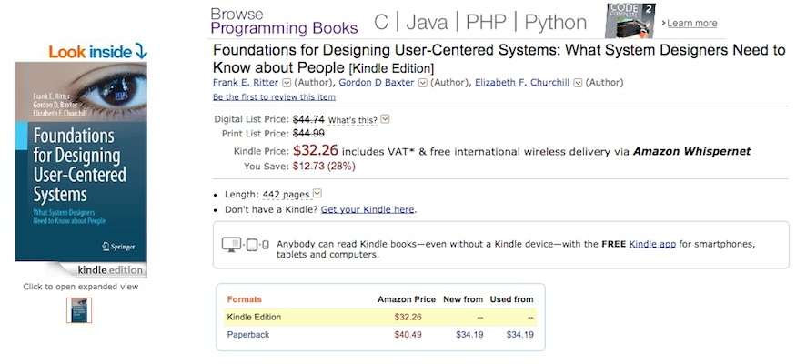Source: Ritter, F. E., Baxter, G. D., & Churchill, E. F. (2014). Foundations for Designing User-Centered Systems: What System Designers Need to Know about People (2014 edition.). New York: Springer.
User-experience Design
Experience Design focuses on the need of designing the quality and the esthetics of the experiences that people live while interacting with an artifact, wether material or immaterial, physical or cognitive, putting on the first level the concept of user experience.
Source: Rizzo, F. (2009). Strategie di co-design : teorie, metodi e strumenti per progettare con gli utenti. Milano: F. Angeli.
User-experience Design
Two possible interpretations:
- experience design
- design based on the experience
Source: Rizzo, F. (2009). Strategie di co-design : teorie, metodi e strumenti per progettare con gli utenti. Milano: F. Angeli.
User-experience Design: approaches
- people-centered approaches: studying the individual experience
- product-centered approaches: studying the features of products that generate experience
- interaction-centered approaches: studying the interactions between people and artifacts
Source: Rizzo, F. (2009). Strategie di co-design : teorie, metodi e strumenti per progettare con gli utenti. Milano: F. Angeli.
User-experience Design: Emotions
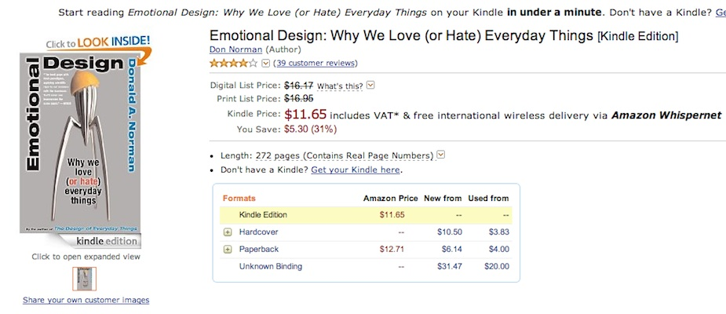Source: Norman, D. A. (2004). Emotional design why we love (or hate) everyday things. New York: Basic Books.
Emotions: how?
Emotions: how?
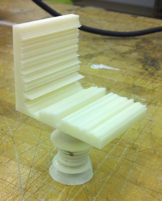Source: http://www.themindensemble.com/tag/mind-processing-chair-emotiv-epoc-anton-rhino/
Emotions: how?
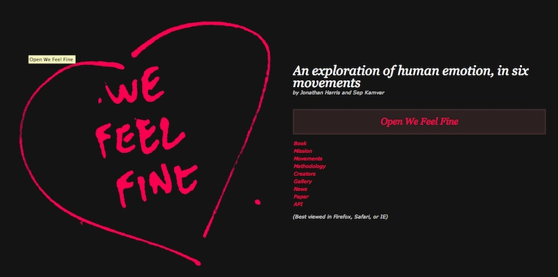Source: http://www.wefeelfine.org/
User-experience Design: the role
Experience Design does not aim at understanding how products enter effectively into people's activities. This was the aim of UCD [...] UED tries to understand the deep meaning of how artifacts enter reflexively in relations with the users, of how people understand themselves in relation to the artifacts. Experience Design aims at an empathic understanding of the user [...] [the designer is] an interpreter. The role of an interpreter is to mediate the user experience inside a design process.
Source: Rizzo, F. (2009). Strategie di co-design : teorie, metodi e strumenti per progettare con gli utenti. Milano: F. Angeli.
Experience Design: Experience Economy
Source: Pine, B. J., & Gilmore, J. H. (1999). The experience economy work is theatre & every business a stage. Boston: Harvard Business School Press.
Co-Design
Co-design is defined as a form of collaboration aiming at design [...] It is a methodology for the designing with the users and not necessarily for the users.
Source: Rizzo, F. (2009). Strategie di co-design : teorie, metodi e strumenti per progettare con gli utenti. Milano: F. Angeli.
The landscape of human-centered design
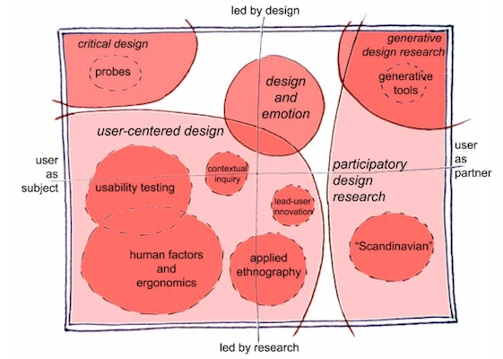Source: Sanders, E., & Stappers, P. J. (2008). Co-creation and the new landscapes of design. CoDesign, 4(1), 5–18. doi:10.1080/15710880701875068
Co-Design & Co-creation
The authors take co-creation to refer to any act of collective creativity, i.e., creativity that is shared by two or more people.
By co-design we indicate collective creativity as it is applied across the whole span of a design process, as was intended by the name of this journal. Thus, co-design is a specific instance of co-creation.
Source: Sanders, E., & Stappers, P. J. (2008). Co-creation and the new landscapes of design. CoDesign, 4(1), 5–18. doi:10.1080/15710880701875068
Co-Design @ the Fuzzy Front End
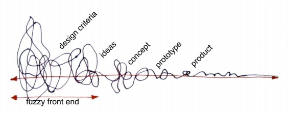The goal of the explorations in the front end is to determine what is to be designed and sometimes what should not be designed and manufactured.
Source: Sanders, E., & Stappers, P. J. (2008). Co-creation and the new landscapes of design. CoDesign, 4(1), 5–18. doi:10.1080/15710880701875068
The limits of user-centered design
But it is now becoming apparent that the user-centered design approach cannot address the scale or the complexity of the challenges we face today. We are no longer simply designing products for users. We are designing for the future experiences of people, communities and cultures who now are connected and informed in ways that were unimaginable even 10 years ago.
Source: Sanders, E., & Stappers, P. J. (2008). Co-creation and the new landscapes of design. CoDesign, 4(1), 5–18. doi:10.1080/15710880701875068
Co-Design: change of role for designers
- User-centered Design: users are passive participants to be studied
- User-experience Design: users are experts of their experience, can then generate concepts, but designers will develop them in artifacts
- Co-Design: users as co-creator, designers as facilitators a nd researchers
Source: Rizzo, F. (2009). Strategie di co-design : teorie, metodi e strumenti per progettare con gli utenti. Milano: F. Angeli.
Probes: a toolkit
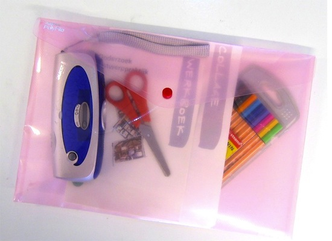Probes: to gather information
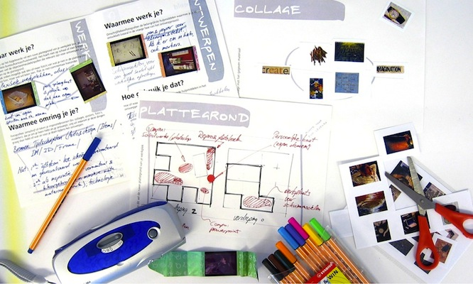Mattelmäki: "Probes"
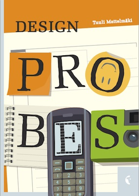Source: Mattelmäki, T. (2006). Design probes. Retrieved from https://www.taik.fi/kirjakauppa/product_info.php?products_id=28
Co-Design: Workshop
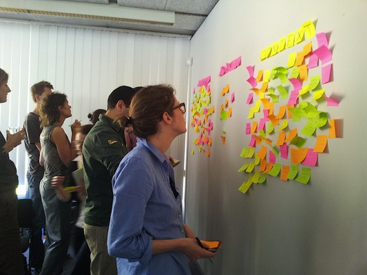Source: http://www.flickr.com/photos/93570163@N02/9204754137/
User-centered Design, User Experience Design, Co-Design
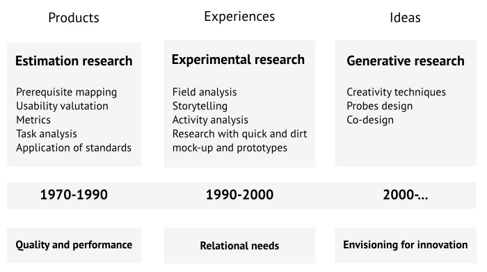
Source: Rizzo, F. (2009). Strategie di co-design : teorie, metodi e strumenti per progettare con gli utenti. Milano: F. Angeli.
Prototypes for User-centered Design, User Experience Design, Co-Design
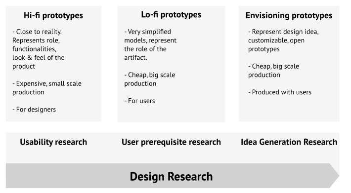
Source: Rizzo, F. (2009). Strategie di co-design : teorie, metodi e strumenti per progettare con gli utenti. Milano: F. Angeli.
2. Open (Source)... everything
von Hippel: "The sources of innovation"
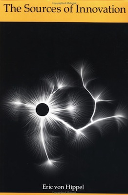Source: Von Hippel, E. (1988). The sources of innovation. New York: Oxford University Press. Retrieved from http://web.mit.edu/evhippel/www/sources.htm
von Hippel: "Democratizing Innovation"
Source: Von Hippel, E. (2005). Democratizing innovation. Cambridge Mass.: MIT Press. Retrieved from http://web.mit.edu/evhippel/www/democ1.htm
Lead Users: Skateboard
.jpg){kind=link}
Source: http://commons.wikimedia.org/wiki/File:Plan_B_(3598746031).jpg
Lead Users: Mountain Bike
{kind=link}
Source: http://commons.wikimedia.org/wiki/File:Devinci_bike.JPG
von Hippel: Lego, User-Generated Innovation
von Hippel: Methodology for Lead Users
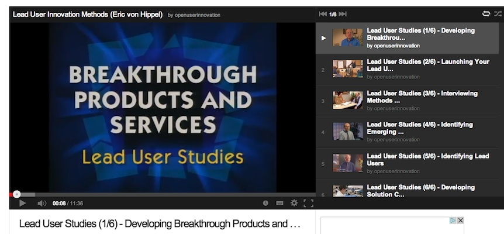Source: http://www.youtube.com/watch?v=tNKrX1QxN6U&list=PLD4C0E9AEDF085119
Ladders of participation: Arnstein
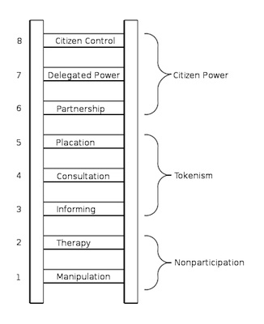Source: Arnstein, S. R. (1969). A ladder of citizen participation. Journal of the American Institute of planners, 35(4), 216–224.
Ladders of participation: Hart
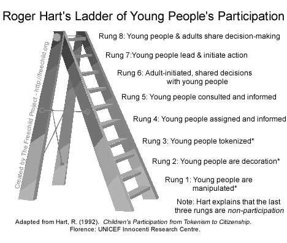Source: Hart, R. A. (1997). Children’s participation: the theory and practice of involving young citizens in community development and environmental care. Earthscan. Retrieved from http://www.cabdirect.org/abstracts/20016783259.html
Ladders of participation: Forrester
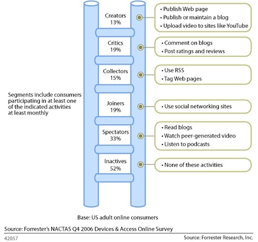Source: NACTAS Q4 2006 Survey.
Ladders of participation: Web communities
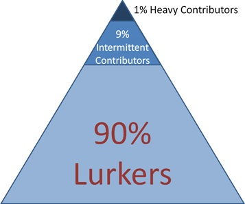Source: http://www.nngroup.com/articles/participation-inequality/
Chesbrough: "Open Innovation"
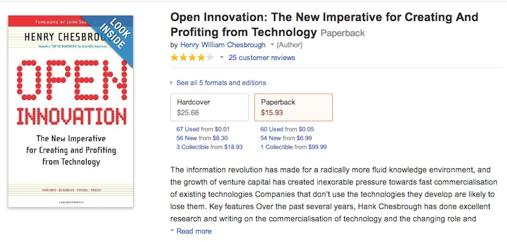Source: Chesbrough, H. W. (2003). Open Innovation: The New Imperative for Creating and Profiting from Technology. Harvard Business School Press.
Chesbrough: "Open Services Innovation"
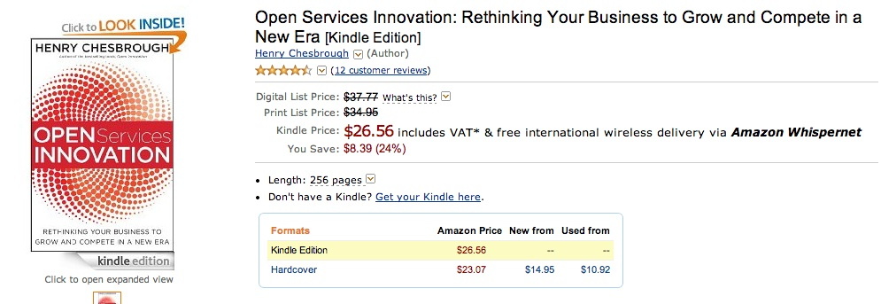Source: Chesbrough, H. (2011). Open Services Innovation: Rethinking Your Business to Grow and Compete in a New Era (1st ed.). Jossey-Bass.
Open Innovation: the concept
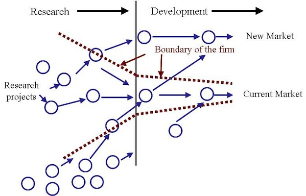Source: http://www.crowdsourcing.org/editorial/open-innovation-creating-through-community-creation/16499
Open Innovation: Innocentive
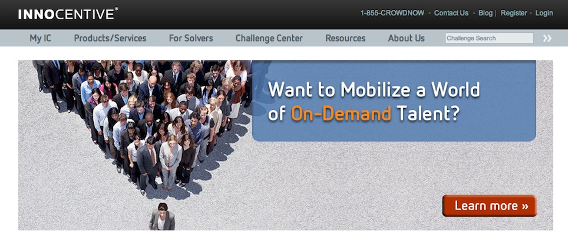Source: http://www.innocentive.com/
Open Innovation: Edra
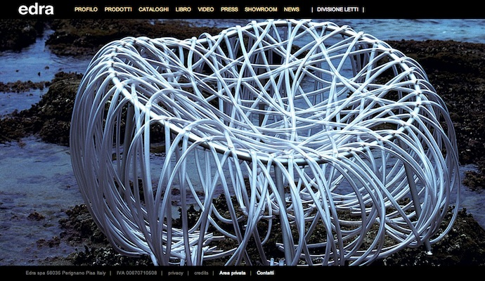Open Innovation: Santa&Cole
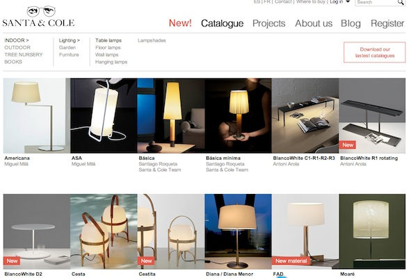Source: http://www.santacole.com/en/catalogo/lamparas-de-sobremesa
Open Innovation: Santa&Cole
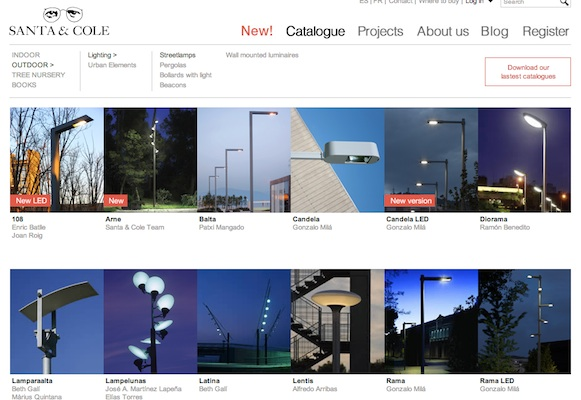Open Innovation: Santa&Cole
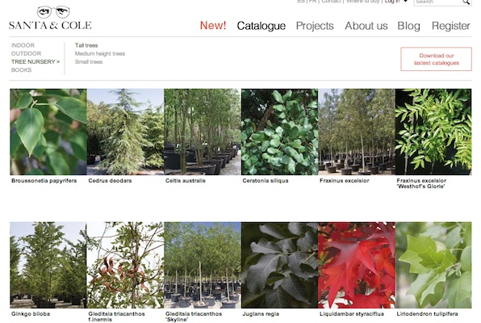Source: http://www.santacole.com/en/catalogo/arboles-de-gran-desarrollo
Open Innovation: Santa&Cole
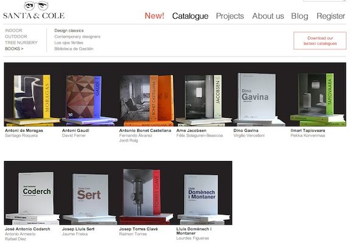Source: http://www.santacole.com/en/catalogo/clasicos-del-diseno
Open Innovation: The Physical Internet
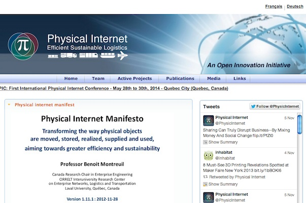Open Source: what is it?
A (software) project published with a license that facilitates its access + modifying + sharing in a collaborative way.
A (software) project developed collaboratively by a community, based not on hierarchy but on reputation.
Open Source: what is it?
Source Code (human readable)
-->
Binary Code (machine readable)
Source Code
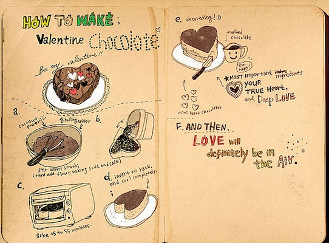Binary Code
Back to history: Mainframes
Back to history: Proprietary Software
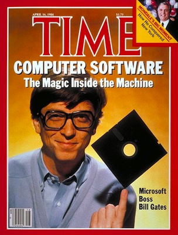Source: http://content.time.com/time/covers/0,16641,19840416,00.html
RMS Stallman
Source: http://stallman.org/
GNU: "Gnu's Not Unix"
Source: http://en.wikipedia.org/wiki/GNU
Stallman: Free Software Definition
“Free software” means software that respects users' freedom and community. Roughly, the users have the freedom to run, copy, distribute, study, change and improve the software. With these freedoms, the users (both individually and collectively) control the program and what it does for them.
RMS Stallman
Stallman: The Four Freedoms
- The freedom to run the program, for any purpose (freedom 0).
- The freedom to study how the program works, and change it so it does your computing as you wish (freedom 1). Access to the source code is a precondition for this.
- The freedom to redistribute copies so you can help your neighbor (freedom 2).
- The freedom to distribute copies of your modified versions to others (freedom 3). By doing this you can give the whole community a chance to benefit from your changes. Access to the source code is a precondition for this.
Free Software Foundation
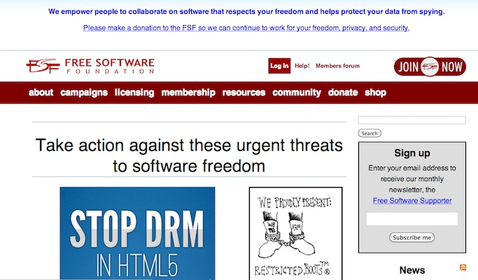Source: http://www.fsf.org/
Stallman: "Free Software Free Society"
Source: Richard Stallman. (2010). Free Software, Free Society - Selected Essays of Richard M. Stallman, 2nd Edition. GNU Press. Retrieved from http://archive.org/details/FreeSoftwareFreeSociety-SelectedEssaysOfRichardM.Stallman2nd
Linus Torvalds
GNU/Linux
GNU/Linux: how it's made
Unix
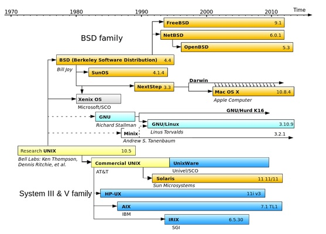{kind=link}
GNU/Linux: Ubuntu
Source: http://en.wikipedia.org/wiki/Ubuntu_(operating_system)
GNU/Linux: Ubuntu
GNU/Linux: Ubuntu
GNU/Linux: Ubuntu on Android
GNU/Linux: Ubuntu Mobile
Source: http://youtu.be/aW8KVq52CYU
GNU/Linux: Ubuntu for Tablets
GNU/Linux: Ubuntu TV
Raymond: "The Cathedral and the Bazaar"
Source: Raymond, E. S. (2001). The Cathedral & the Bazaar: Musings on Linux and Open Source by an Accidental Revolutionary (Revised.). O’Reilly Media. Retrieved from http://www.catb.org/~esr/writings/cathedral-bazaar/
Kuwabara: "Linux: a Bazaar at the edge of chaos"
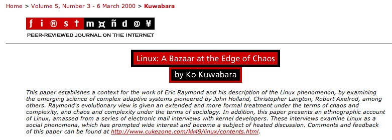Source: Kuwabara, K. (2000). Linux: A Bazaar at the Edge of Chaos. First Monday, 5(3). Retrieved from http://firstmonday.org/article/view/731/640
Open Source Initiative
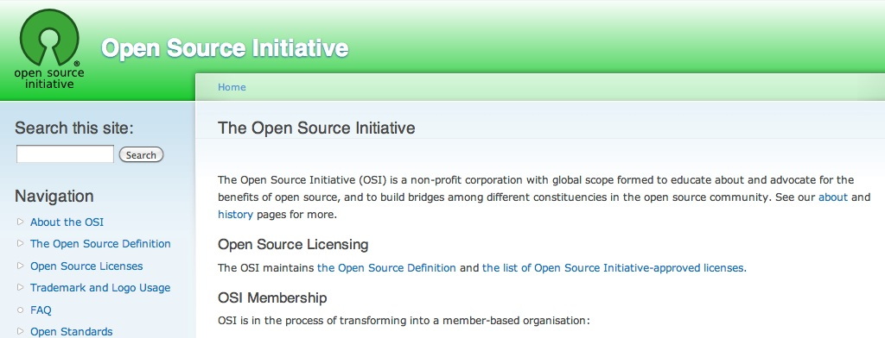Source: http://opensource.org/
The Open Source Definition
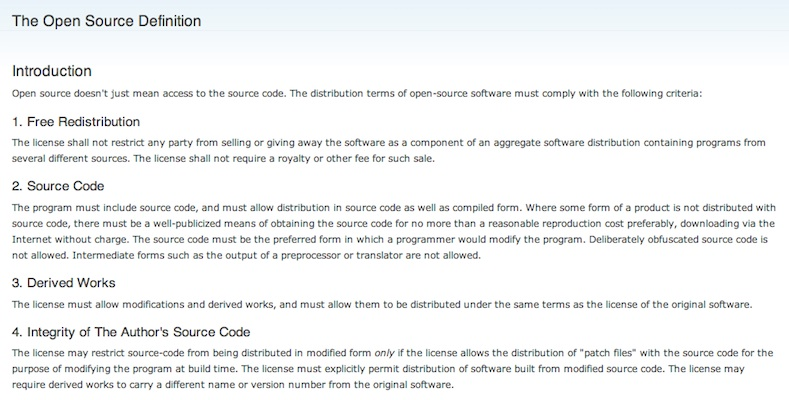Source: http://opensource.org/osd
Open Source: LAMP Stack
Source: http://opensource.org/osd
Open Source Design software: Gimp
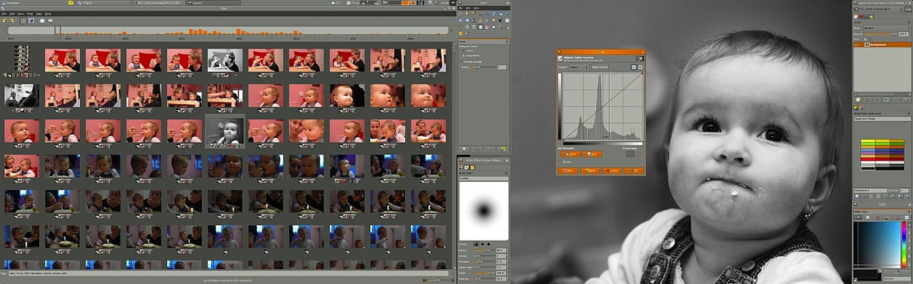Source: http://www.gimp.org/
Open Source Design software: Inkscape
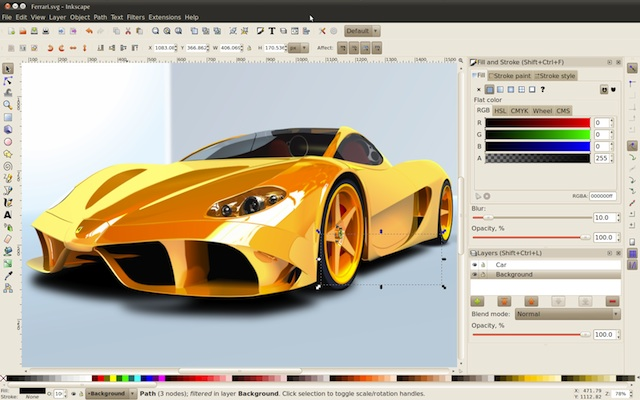Source: http://www.inkscape.org/
Open Source Design software: Blender
Source: http://www.blender.org/
Blender: Open Movies
Source: http://youtu.be/YE7VzlLtp-4
Open Source Design software: Scribus
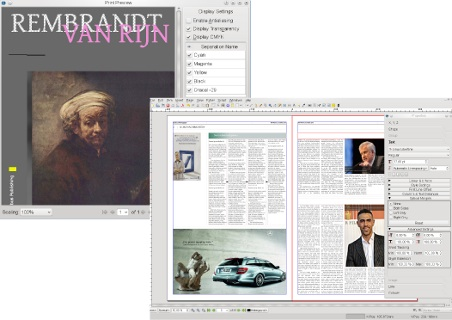Source: http://www.scribus.net/
Open Source and Co-Design
- Democratization of access, not necessarily of design
- By professionals, for professionals: Knowledge intensive
- Yes, if there are designers... but relationships should be redefined
- ...
Open Source vs. Open Innovation
“Open innovation is sometimes confated with open source methodologies for software development. There are some concepts that are shared between the two, such as the idea of greater external sources of information to create value. However, open innovation explicitly incorporates the business model as the source of both value creation and value capture. This latter role of the business model enables the organization to sustain its position in the industry value chain over time. While open source shares the focus on value creation throughout an industry value chain, its proponents usually deny or downplay the importance of value capture.”
Source: Chesbrough, H. (2011). Open Services Innovation: Rethinking Your Business to Grow and Compete in a New Era (1st ed.). Jossey-Bass.
Open Data: a related issue
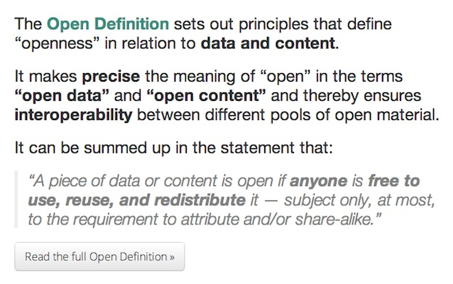Source: http://opendefinition.org/
Open Data: which kind of data?
Source: http://okfn.org/opendata/
Open Data: a handbook
Source: http://opendatahandbook.org/
Open Data: an example
Source: http://openspending.org/
Open Data: Open Knowledge Foundation
Source: http://okfn.org/
Big Data vs Open Data vs Open Government
Source: http://www.opendatanow.com/2013/11/new-big-data-vs-open-data-mapping-it-out/
Lunch time! Questions?
See you at 14:00
1. Open Design + Metadesign: concepts and development
Web 2.0
Source: http://en.wikipedia.org/wiki/You_(Time_Person_of_the_Year)+
http://content.time.com/time/magazine/article/0,9171,1570810,00.html
Web 2.0 + Design
Peer-to-Peer
Peer-to-Peer + Design
Source: http://www.kiva.org/lend/333427
Peer-to-Peer + Design
Intercontinental Ballistic Microfinance from Kiva on Vimeo.
Source: http://vimeo.com/28413747
Crowdsourcing
Source: http://www.innocentive.com/
Crowdsourcing + Design
Source: http://www.crowdspring.com/
Mobile: Single user designing, no collaboration
Source: http://www.mshape.com/
Mobile: Smart Mobs, Ubiquitous Computing
Hybrid models: OpenIDEO
Source: http://www.openideo.com/
Hybrid models: OpenIDEO
Open Source Everywhere
Software is just the beginning … open source is doing for mass innovation what the assembly line did for mass production. Get ready for the era when collaboration replaces the corporation.
Source: Goetz, T. (2003, November). Open Source Everywhere. Wired, 11(11). Retrieved from http://www.wired.com/wired/archive/11.11/opensource.html
Open Drink
Source: http://en.wikipedia.org/wiki/Free_Beer+
http://en.wikipedia.org/wiki/OpenCola_(drink)
Open Biotechnology
Open Hardware Definition
Source: http://freedomdefined.org/OSHW
Open Hardware Definition Logo
Source: http://oshwlogo.com/
Open Source: what is it?
A (software) project published with a license that facilitates its access + modifying + sharing in a collaborative way.
A (software) project developed collaboratively by a community, based not on hierarchy but on reputation.
Open Source + P2P + Design: possible directions
- Adoption of open source and p2p principles, practices and organizational forms inside the design discipline: Open Design
- Use of design knowledge, tools and practices for replicating open source and peer-to-peer initiatives: Open Metadesign - Open P2P Design
1.1 Open Design
Open Design: what is it?
A design a project published with a license that facilitates its sharing and that can be “compiled” or “manufactured” locally.
Open Design refers to every kind of design projects that can be shared in a digital format over a network.
Open Design: what is it?
- sharing
- collaboration
- open licenses (?)
- source code --> artifact
Open Design Definition, from 2000
Open Design Working Group
Source: http://design.okfn.org/
Open Design Working Group; Mailing List
Open Design Working Group: Mailing List Archive
Open Design Definition, from 2012 - ...
Source: https://github.com/OpenDesign-WorkingGroup/Open-Design-Definition
Open Design: Product Design - Thinkcycle
Source: Sawhney, N. (2003). Cooperative innovation in the commons: rethinking distributed collaboration and intellectual property for sustainable design innovation. Massachusetts Institute of Technology. Retrieved from http://dspace.mit.edu/handle/1721.1/61861
Open Design: Product Design - Ronen Kadushin
Source: http://www.ronen-kadushin.com/index.php/open-design/
Open Design: Open Design / Open Hardware - RepRap
Source: http://reprap.org/
Open Design: Typographic Design - Gentium
Source: http://scripts.sil.org/cms/scripts/page.php?site_id=nrsi&item_id=Gentium
Open Design: Fashion Design - OpenWear
Source: http://www.openwear.org/
Open Design: Architectural Design - Open Architecture Network
Open Design: Architectural Design - OSBA @ MIT
Source: Kovidvisith, K. (2007). Open source building alliance ecology : the Internet framework for consumer driven participative design (Thesis). Massachusetts Institute of Technology. Retrieved from http://dspace.mit.edu/handle/1721.1/39313
Open Design: Architectural Design - WikiHouse
Source: http://www.wikihouse.cc/
Open Design Competitions: Unlimited Design / Open Design Contest
Source: http://opendesigncontest.org/
Open Design Competitions: Autoprogettazione 2.0 @ Domus
Source: http://www.domusweb.it/en/news/2012/04/11/autoprogettazione-2-0-on-display.html
A completely open product: Open Design, Hardware, Software: OpenMoko
A completely open product: Open Design, Hardware, Software: OpenMoko
A completely open product: Open Design, Hardware, Software: BugLabs
Source: http://buglabs.net/
A completely open product: Open Design, Hardware, Software: BugLabs
A completely open product: Open Design, Hardware, Software: BugLabs
A completely open product: Open Design, Hardware, Software: BugLabs
BugLabs + Ford
Source: http://openxcplatform.com/
First global company to adopt Open Design: Nokia
Source: http://www.openp2pdesign.org/2013/open-design/first-global-company-to-embrace-open-design/
Open Design: becoming mainstream
Open Design: becoming mainstream
Source: http://opendesignnow.org/
Open Design: becoming mainstream
Source: http://www.droog.com/news/category/design-for-download-2/
Open Design: becoming mainstream
Source: http://www.instructables.com/community/Instructables-Joins-Autodesk/
Open Design: becoming mainstream
Source: http://www.123dapp.com/create
Open Design: becoming mainstream
Source: https://github.com/openp2pdesign/Open-Design-Exhibition
Sketch Chair: Open Design as code
Source: http://www.sketchchair.cc/
Sea Chair: Open Design as process
Sea Chair: Open Design as process
Sea Chair: Open Design as documentation
Open Source Sea Chair from Studio Swine on Vimeo.
The current status of Open Design
- single persons or small groups design a project and then just publish it online
- lack of new tools, processes, systems that enable designers and users in developing open design projects
- where is the collaboration?
- where are the open processes?
- where are the communities?
The current status of Open Design
The experience of a user of Open Source software
Source: http://sourceforge.net/
… the big picture of Open Source: the process
code_swarm - Python from Michael Ogawa on Vimeo.
… the big picture of Open Source: the process
… the big picture of Open Source: the process
A more systemic definition of Open Design (1)
A collaborative distributed system of design & manufacturing based on:
- sharing
- collaboration
- open licenses ?
- open and distributed manufacturing technologies
A more systemic definition of Open Design (2)
A system of agents that:
- use
- design
- manufacture
- distribute
- manage the end of life
- ...
1.2 Open Metadesign - Open P2P Design
Open and P2P services: Getaround
Source: http://www.getaround.com/
Open and P2P services: AirBnB
Source: https://www.airbnb.com/
Open and P2P services: Collaborative Consumption
Source: Botsman, R., & Rogers, R. (2010). What’s Mine Is Yours: The Rise of Collaborative Consumption. HarperCollins e-books.
Open and P2P services: Collaborative Consumption
Open and P2P services: Collaborative Consumption
Source: Gansky, L. (2010). The Mesh: Why the Future of Business Is Sharing (Reprint edition.). Portfolio.
Open and P2P services: Collaborative Consumption
Source: http://meshing.it/companies
Open and P2P services: Collaborative Consumption
Source: http://ouishare.net/
Open and P2P services: Collaborative Consumption
Source: http://ouisharefest.com/
Open and P2P services: RED, Open Health
Open and P2P services: RED, Open Health
Towards Activity-centered Design
HCD asserts as a basic tenet that technology adapts to the person. In ACD, we admit that much of human behavior can be thought of as an adaptation to the powers and limitations of technology.[...] People do adapt to technology. It changes social and family structure. It changes our lives. Activity-Centered Design not only understands this, but might very well exploit it.
Source: Norman, D. A. (2005). Human-centered design considered harmful. interactions, 12(4), 14–19. doi:10.1145/1070960.1070976 Retrieved from http://www.jnd.org/dn.mss/human-centered_desig.html
Gay - Hembrooke "Activity-centered Design"
Source: Gay, G., & Hembrooke, H. (2004). Activity-Centered Design: An Ecological Approach to Designing Smart Tools and Usable Systems. The MIT Press.
Kaptelinin "Acting with technology"
Source: Kaptelinin, V., & Nardi, B. A. (2009). Acting with Technology: Activity Theory and Interaction Design. The MIT Press.
Activity Theory: Activity System
Source: Engestrom, Y. (1987). Learning by expanding: An activity-theoretical approach to developmental research. Orienta-Konsultit Oy.
Activity Theory: Activity System
Activity Theory: Activity System
Activity Theory: Activity System
Source: Engestrom, Y. (1987). Learning by expanding: An activity-theoretical approach to developmental research. Orienta-Konsultit Oy.
Activity Theory: Activity System
Source: Engestrom, Y. (1987). Learning by expanding: An activity-theoretical approach to developmental research. Orienta-Konsultit Oy.
Activity Design
- analysis of an activity
- design of an activity
- service design: design of interactions in space and time
Activity Design
- design of a collaborative activity
- meta-design of a collaborative design process
- open p2p design: collaborative meta-design + design of a collaborative activity
Meta-design
Meta-design: flows #20
Meta-design: flows #21
Meta-design: current research #data
Source: http://openmetadesign.org/
Meta-design: current research #viz
Source: http://openmetadesign.org/
Lunch time! Questions?
See you at 13:00
2. Intellectual property and design: laws and the design process
Piracy and Design
Source: http://youtu.be/RB7X6uti-_0 - http://www.qatarfakes.com/
Piracy and Design
Source: http://www.dezeen.com/2013/01/02/zaha-hadid-building-pirated-in-china/
Close to the Napster case of 3D Printing
Digital Rights Management (DRM) and Design
DRM CHAIR from Thibault Brevet on Vimeo.
Source: http://www.wired.co.uk/news/archive/2013-03/03/drm-chair
Digital Rights Management (DRM) and Design
Source: https://torrentfreak.com/3d-printer-drm-patent-to-stop-people-downloading-a-car-121012/
Digital Fabrication and Copying
Source: http://www.sculpteo.com/en/app/
Digital Fabrication and Copying
Source: http://living.corriere.it/catalogo/prodotti/Campeggi/Santapouf.shtml
Digital Fabrication and Copying
Digital Fabrication and Copying
Source: http://twitpic.com/7t9879
Fashion Design and Copying
Fashion Design and Copying
Source: http://www.refinedhype.com/hyped/entry/adidas-beachstar-sandal
Fashion Design and Copying
Source: http://www.adidas.fi/Men%27s-Duramo-Clog-Slides/G62583_640,fi_FI,pd.html
Copyright
Copyright essentially attaches to every original creative work that is fixed in a tangible medium. This includes most things that are written, drawn, or designed. However, the copyright only protects the actual writing, drawing, or design itself, not the idea that it expresses.
Source: http://www.publicknowledge.org/it-will-be-awesome-if-they-dont-screw-it-up
Copyright
- the right to copy (the rights to let or stop copying)
- the author's rights (the rights to be credited)
Ex/No Copyright: Public Domain
Works in the public domain are those whose intellectual property rights have expired, have been forfeited, or are inapplicable. [...] The term is not normally applied to situations where the creator of a work retains residual rights, in which case use of the work is referred to as "under license" or "with permission". [...] Copyrighted works may not be used for derivative works without permission from the copyright owner, while public domain works can be freely used for derivative works without permission.
Ex/No Copyright: Public Domain
Patent
Patent protection is not granted automatically. An inventor must apply for a patent on her invention at the Patent and Trademark Offce (PTO). The invention must be new, useful, and non-obvious. In making the application, the inventor must disclose information that would allow others to practice the invention. Finally, patent protection is significantly shorter in duration than copyright protection.
Source: http://www.publicknowledge.org/it-will-be-awesome-if-they-dont-screw-it-up
Patent
Once an object has been patented, all copies, regardless of the copier’s knowledge of the patent, infringe upon that patent. Simply stated, if you are using a 3D printer to reproduce a patented object, you are infringing on the patent.
Source: http://www.publicknowledge.org/it-will-be-awesome-if-they-dont-screw-it-up
Patent
Copyright, Patent and originality ...
When a child in Seattle writes an ode to his pet dog, that work is protected by copyright. If, two years later, another child in Atlanta writes an identical ode to her pet dog (unaware of the frst ode), the second work is also protected by copyright. This is possible because copyright allows for independent creation, even if the same work was independently created twice (or even more than twice). While a work must be original in order to receive copyright protection, the work does not need to be unique in the world.
Source: http://www.publicknowledge.org/it-will-be-awesome-if-they-dont-screw-it-up
Copyright, Patent and originality ...
However, and relevantly for reproducing 3D objects, patent law does have a novelty requirement. Patent law does not allow for parallel creation. Once an invention is patented every unauthorized reproduction of that invention is an infringement, whether the reproducer is aware of the original invention or not.
Source: http://www.publicknowledge.org/it-will-be-awesome-if-they-dont-screw-it-up
Watch out when you enter this game...
Source: http://www.wired.com/gadgetlab/2012/08/s-korea-court-rules-damages/
Trademark ...
Trademark developed as a way to protect consumers, giving them confdence that a product marked with a manufacturer’s symbol was actually made and backed by that manufacturer. As a result, trademark is not designed to protect intellectual property per se. Intellectual property protection is instead a side effect of needing to protect the integrity of the mark.
Source: http://www.publicknowledge.org/it-will-be-awesome-if-they-dont-screw-it-up
Trademark ...
Because trademark protection is specifcally geared towards preventing consumer confusion in the marketplace, trademark infringement is described in terms of “use in commerce.” Unlike patent or copyright, it is not copying a trademark that creates a trademark violation. Instead, it is using that trademark in commerce (thus potentially confusing a consumer as to the origin of the product) that results in a violation.
Source: http://www.publicknowledge.org/it-will-be-awesome-if-they-dont-screw-it-up
Trademark ...
A trademark may be designated by the following symbols:
- ™ (the "trademark symbol", which is the letters "TM", for an unregistered trademark, a mark used to promote or brand goods)
- ℠ (which is the letters "SM" in superscript, for an unregistered service mark, a mark used to promote or brand services)
- ® (the letter "R" surrounded by a circle, for a registered trademark)
Trademark
Trademark
Source: http://arduino.cc/en/Trademark/HomePage?from=Main.Trademark
Trade Dress
Trademark protection can extend beyond a logo affxed to a product to include the design of the product itself. However, in order to extend protection to product design, courts have required that trade dress acquire a distinct association with a specifc manufacturer. Acquiring this type of distinctiveness takes time, and must be proven by survey results or some other proof of association in the eyes of the general public. As a result most product designs, even unique designs intended “to render the product more useful or more appealing,” will not be protected as trade dress.
Source: http://www.publicknowledge.org/it-will-be-awesome-if-they-dont-screw-it-up
Trade Dress
Be careful: every country has its laws...
Source: http://www.voga.com/still-legal/
Licensing your project...
The main beneft of product licensing is that you do not have all of the risk and headaches that necessarily come with running your own business. It is quite true that you could make a lot more money if you sold your own idea (if you did not screw things up at any number of places along the way).
Young designers often gasp when hearing that a good royalty rate might be 5% of wholesale cost (around 2% of retail price)—"but it is MY idea!" Seasoned designers understand that a designed product (not to mention one that is not engineered, sourced, and fully developed and tested) is but a small part of the business equation.
Source: http://www.core77.com/blog/columns/product_licensing_in_an_era_of_open_innovation_22953.asp
Creative Commons: licensing the sharing
Source: http://creativecommons.org/
Creative Commons: review conditions
Creative Commons: review conditions
Creative Commons: not all are open source
- Non commercial: restriction on distribution
- Non derivative: restriction on modification
Creative Commons: choose a license
Creative Commons: Public Domain
- CC0: for new projects into Public Domain (not approved as OSI)
- Public Domain: for existing projects in Public Domain
Software: MIT license
The MIT License is a free software license originating at the Massachusetts Institute of Technology (MIT). It is a permissive free software license, meaning that it permits reuse within proprietary software provided all copies of the licensed software include a copy of the MIT License terms. Such proprietary software retains its proprietary nature even though it incorporates software under the MIT License. The license is also GPL-compatible, meaning that the GPL permits combination and redistribution with software that uses the MIT License.
Software: MIT license
Software: BSD licenses
BSD licenses are a family of permissive free software licenses, imposing minimal restrictions on the redistribution of covered software. [...] The original BSD license was used for its namesake, the Berkeley Software Distribution (BSD), a Unix-like operating system. The original version has since been revised and its descendants are more properly termed modified BSD licenses. [...] The BSD License allows proprietary use and allows the software released under the license to be incorporated into proprietary products. Works based on the material may be released under a proprietary license as closed source software.
Software: BSD licenses
Two variants of the license, the New BSD License/Modified BSD License (3-clause), and the Simplified BSD License/FreeBSD License (2-clause) have been verified as GPL-compatible free software licenses by the Free Software Foundation, and have been vetted as open source licenses by the Open Source Initiative, while the original, 4-clause license has not been accepted as an open source license and, although the original is considered to be a free software license by the FSF, the FSF does not consider it to be compatible with the GPL due to the advertising clause.
Software: 4-clause license (original "BSD License")
Software: 3-clause license ("Revised BSD License", "New BSD License", or "Modified BSD License")
Software: 2-clause license ("Simplified BSD License" or "FreeBSD License")
Software: GPL license
The GNU General Public License (GNU GPL or GPL) is the most widely used free software license, which guarantees end users (individuals, organizations, companies) the freedoms to use, study, share (copy), and modify the software. Software that ensures that these rights are retained is called free software. The license was originally written by Richard Stallman of the Free Software Foundation (FSF) for the GNU project.
Software: GPL license
The GPL grants the recipients of a computer program the rights of the Free Software Definition and uses copyleft to ensure the freedoms are preserved whenever the work is distributed, even when the work is changed or added to. The GPL is a copyleft license, which means that derived works can only be distributed under the same license terms. This is in distinction to permissive free software licenses, of which the BSD licenses are the standard examples. GPL was the first copyleft license for general use.
Software: LGPL license
The GNU Lesser General Public License or LGPL (formerly the GNU Library General Public License) is a free software license published by the Free Software Foundation (FSF). The LGPL allows developers and companies to use and integrate LGPL software into their own (even proprietary) software without being required (by the terms of a strong copyleft) to release the source code of their own software-parts. Merely the LGPL software-parts need to be modifiable by end-users (via source code availability): therefore, in the case of proprietary software, the LGPL-parts are usually used in the form of a shared library (e.g. DLL), so that there is a clear separation between the proprietary parts and open source LGPL parts.
Software: AGPL (Affero) license
Both versions of the AGPL were designed to close a perceived application service provider "loophole" (the "ASP loophole") in the ordinary GPL, where, by using but not distributing the software, the copyleft provisions are not triggered. Each version differs from the version of the GNU GPL on which it is based in having an additional provision addressing use of software over a computer network. The additional provision requires that the complete source code be made available to any network user of the AGPL-licensed work, typically a Web application. The Free Software Foundation has recommended that the GNU AGPLv3 be considered for any software that will commonly be run over a network.
Source: http://en.wikipedia.org/wiki/Affero_General_Public_License
Hardware: TAPR
Source: http://www.tapr.org/ohl.html
Hardware: CERN
Design: even more complicated
Source: Margoni, T. (2013). Not for Designers: On the Inadequacies of EU Design Law and How to Fix It (SSRN Scholarly Paper No. ID 2361682). Rochester, NY: Social Science Research Network. Retrieved from http://papers.ssrn.com/abstract=2361682
Design: Maybe with CC+
Everything is a Remix #1
Everything is a Remix Part 1 from Kirby Ferguson on Vimeo.
Source: http://vimeo.com/14912890
Everything is a Remix #2
Everything is a Remix Part 2 from Kirby Ferguson on Vimeo.
Source: http://vimeo.com/19447662
Everything is a Remix #3
Everything is a Remix Part 3 from Kirby Ferguson on Vimeo.
Source: http://vimeo.com/25380454
Everything is a Remix #4
Everything is a Remix Part 4 from Kirby Ferguson on Vimeo.
Source: http://vimeo.com/36881035
For a further reading on this topic
Source: Lessig, L. (2004). Free Culture: The Nature and Future of Creativity. Penguin Books. Retrieved from http://www.free-culture.cc/
For a further reading on this topic
Source: Lessig, L. (2002). The Future of Ideas: The Fate of the Commons in a Connected World (Vintage). Vintage. Retrieved from http://www.the-future-of-ideas.com/download/
For a further reading on this topic
Source: Aigrain, P. (2012). Sharing: culture and the economy in the internet age. Amsterdam: Amsterdam Univ. Press. Retrieved from http://www.sharing-thebook.com/content/download
For a further watching on this topic
Thank you!
Massimo Menichinelli / info@openp2pdesign.org / @openp2pdesign

This work is licensed under a Creative Commons Attribution 4.0 International License.
Massimo Menichinelli 2015
openp2pdesign.org